Honestly, things have changed. Today, you can choose almost anywhere you want to live. In a way, that means you can choose your home from anywhere in the world. I was born and raised in Korea and spent most of my life there. I never really complained about it because everything was comfortable. I could speak my first language, Korean. I graduated from university, became a qualified civil engineer, and could find a job quite easily.
One of the biggest advantages of living in Korea is accessibility. Food, community, education, transportation—everything is close by. The moment you step outside, you can find convenience stores, local markets, cafés, and bus stations. You can travel around the city with ease.
But somehow, I always had a feeling that I didn't quite belong there. Sometimes that feeling made me sad. I was a good kid growing up. I didn't cause much trouble, which means there weren't many moments when my parents had to worry about me. I fit into society well enough.
But something changed when I became a senior employee at the company where I worked. I looked around at my coworkers and tried to imagine my future. I tried to picture what my life would look like in ten or twenty years. And I couldn't see myself there. It wasn't that their lives were bad. They were good lives. They just weren't the lives I wanted.
So I quit my job and started dreaming about a different future. I learned new skills and eventually became a freelance teacher working in schools. I loved that job. I loved meeting people, talking to them, and hearing their stories.
Then I traveled to Mexico for three months. I met so many people who seemed genuinely happy. Not rich. Not successful in the way society usually defines success. Just happy. People were easygoing. One of the things that impressed me most was visiting taco stands set up right outside their houses. People were incredibly proud of what they made. They smiled. They welcomed me. They welcomed everyone. And almost every conversation ended with the same words: "Welcome to Mexico.” There was something about that warmth that stayed with me.
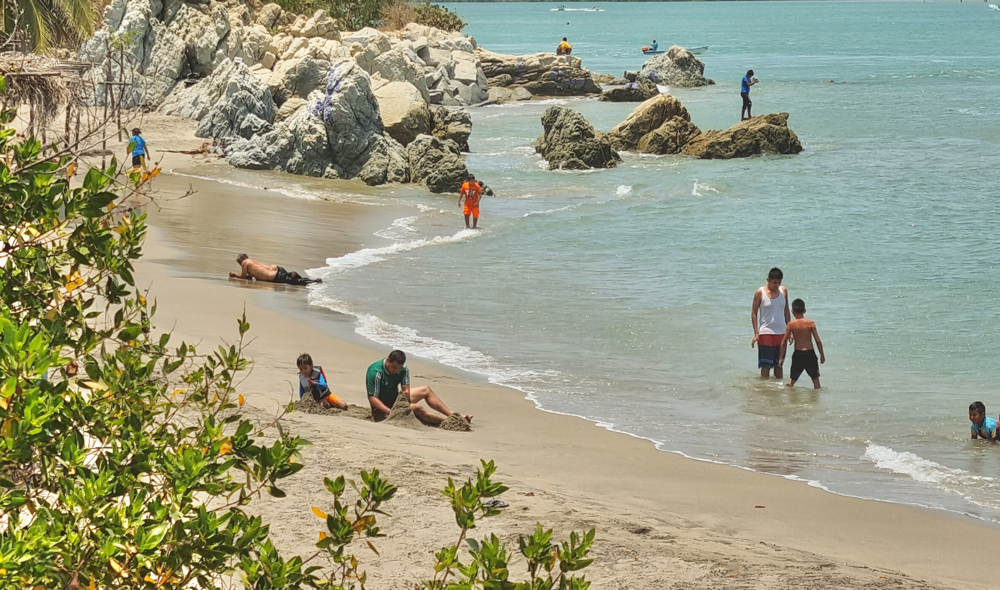
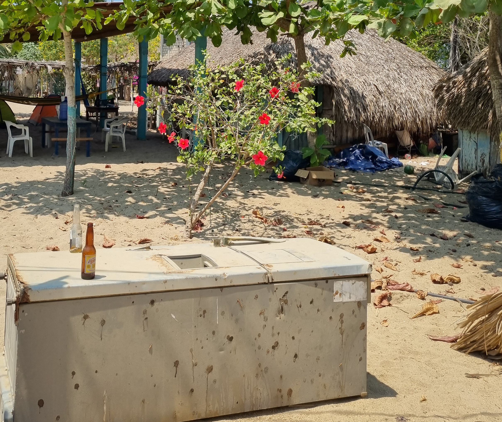
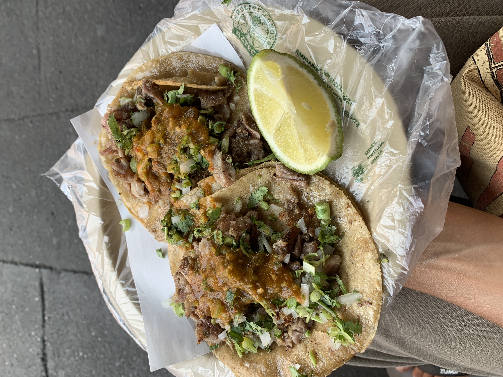
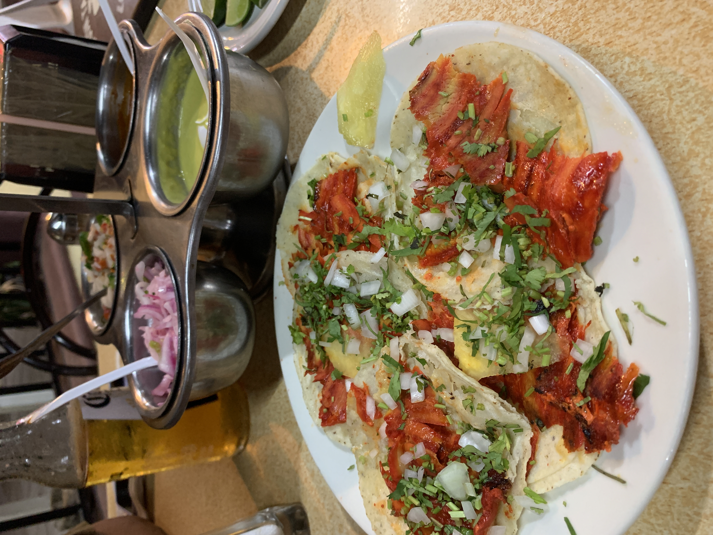
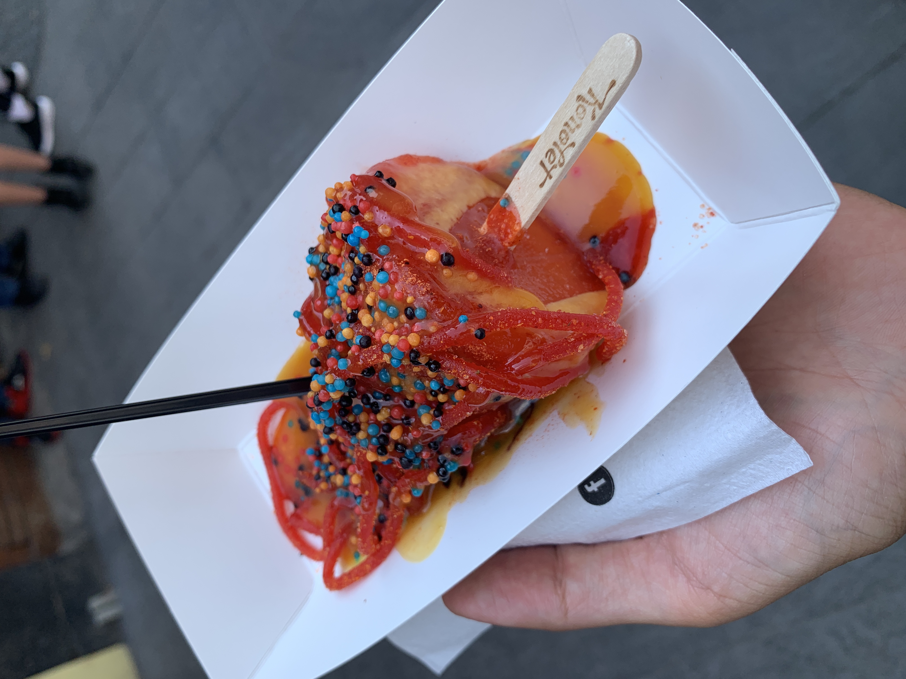
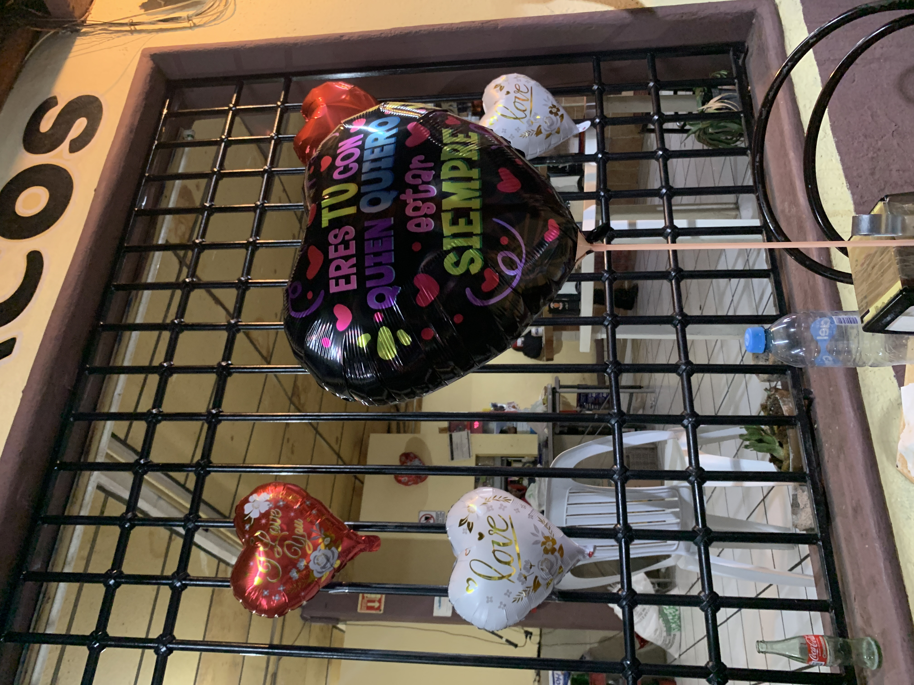
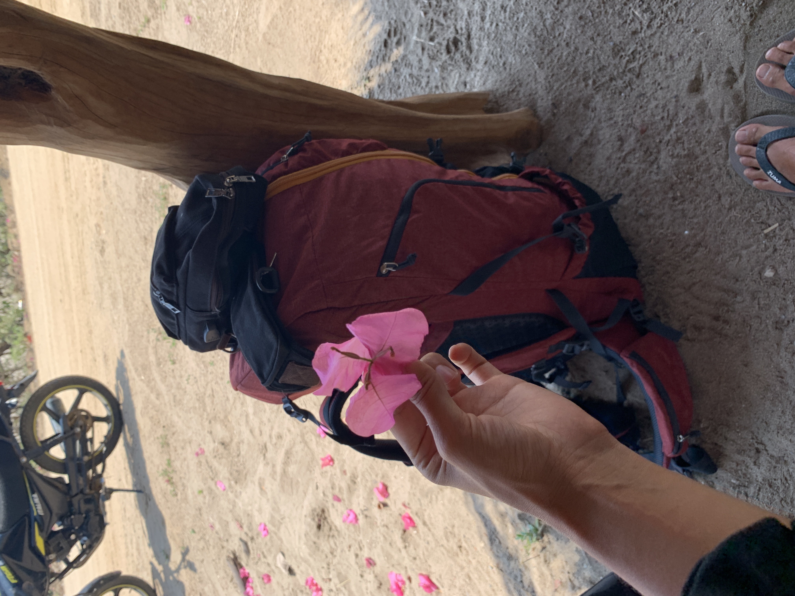
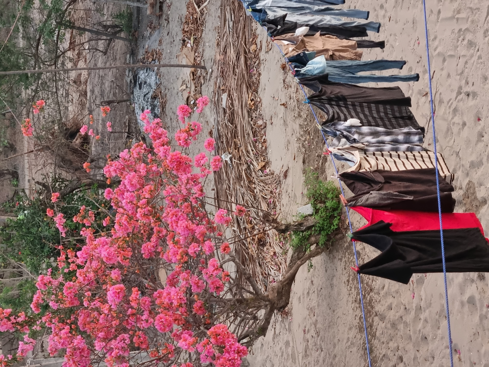
For the first time, I thought: Maybe this is my soul country. One of my favorite passages comes from The Moon and Sixpence, one of my favorite books. It suggests that some people are born in places where they were never truly meant to stay. By chance, they find themselves in an environment that doesn't quite fit them, and they spend their lives longing for a home they cannot name. Then, sometimes, almost mysteriously, they stumble upon a place where they feel, "This is where I belong." That place becomes the home they had been searching for all along. Those words stayed with me for a long time. Maybe that's what I've been looking for too. A soul country. A home. For years, I've wondered what home actually means.
Is it where I was born? Where my parents are? Where I currently live? Can Mexico, a country I only visited for a few months, be considered home simply because I felt welcomed there?Then I came to Australia. I started a new career in hospitality and, surprisingly, I loved it. I enjoyed the simplicity of it: serving customers, having small conversations, receiving immediate feedback. And above all, I realized that I like people far more than I had ever admitted to myself. There was a sense of satisfaction in seeing the results of my work right away. I wasn't tied to a single job, and when the busy season ended, I could leave and travel. I could go on road trips. I could drive from Noosa to Tasmania with no real plan. I could choose where to sleep, what to eat, and what to do each day.
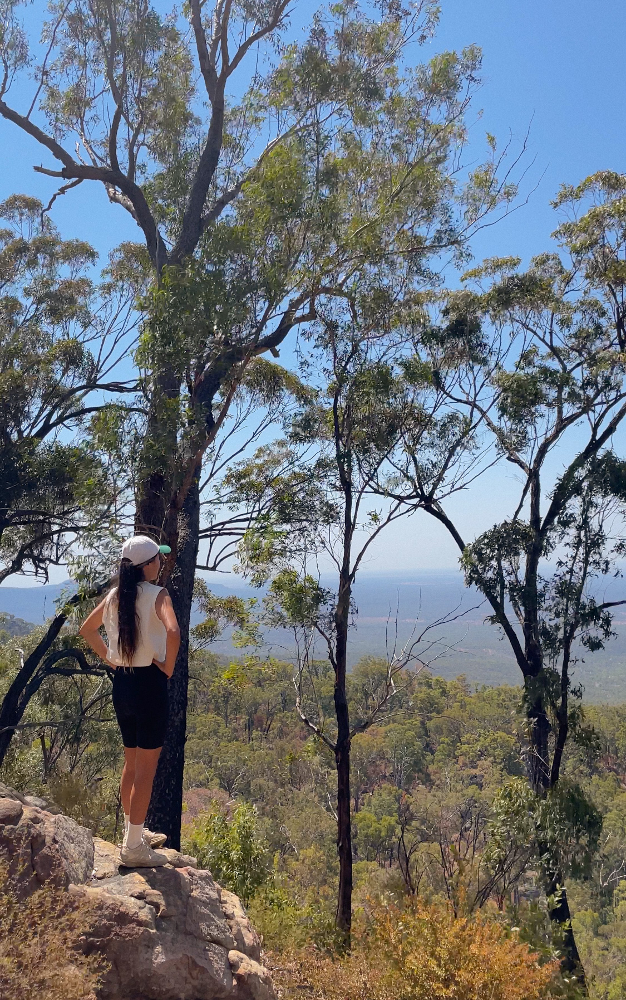
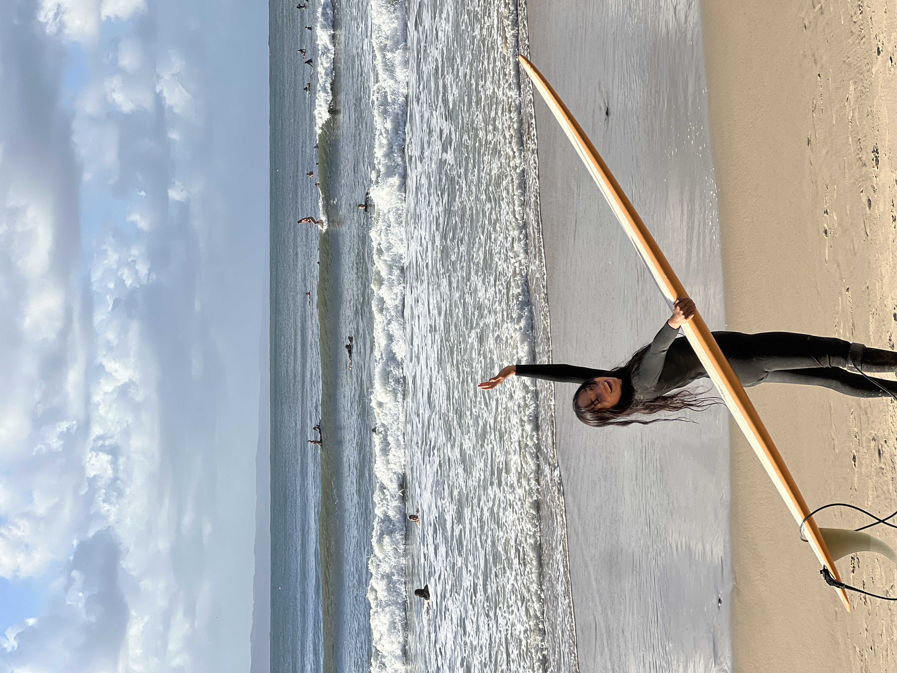

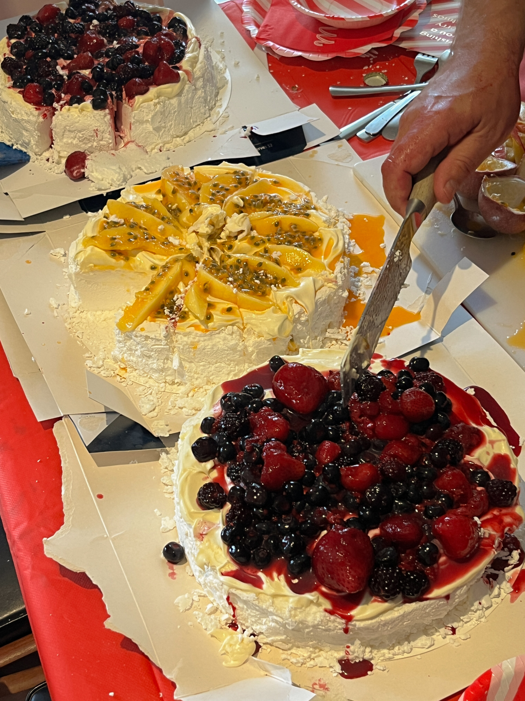
That freedom was precious. And somehow, I found it in Australia. These days, I think about home differently. If there are people I love, people who welcome me, and a town where I can live a life that feels true to myself, isn't that home?
Maybe home has nothing to do with a physical house. Maybe it isn't about property, money, or even geography. I want to make people my home rather than a place. And instead of spending my whole life searching for one perfect soul country, maybe I can build small homes for my heart all around the world. Maybe the whole world can become home.